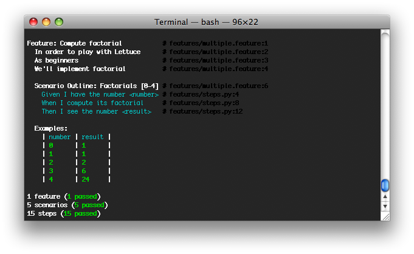

On our :ref:first description file<tutorial-simple>,
zero.feature, all scenarios were similar. This made us repeat most of
the text again and again.
Isn't there a better way to deal with this - when several scenarios are almost equal and only some values change?
Yes, there is! :) You just need to use scenarios outlines.
An example is shown below:
Feature: Compute factorial
In order to play with Lettuce
As beginners
We'll implement factorial
Scenario Outline: Factorials [0-4]
Given I have the number <number>
When I compute its factorial
Then I see the number <result>
Examples:
| number | result |
| 0 | 1 |
| 1 | 1 |
| 2 | 2 |
| 3 | 6 |
| 4 | 24 |
This way, you will only need to provide the values that really change, reducing “copy & paste” work and making your tests more clear.
